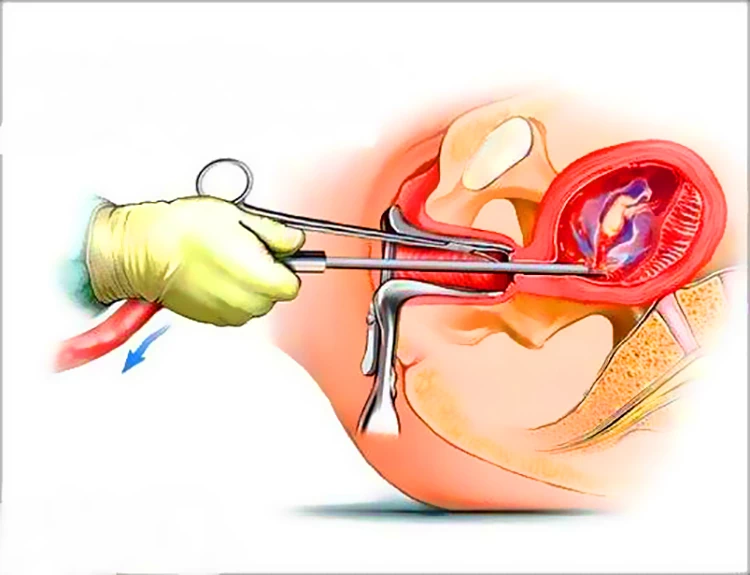
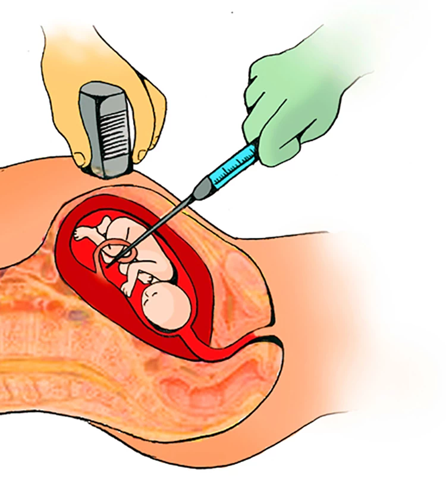

Es el nombre que se le da al aborto cuándo se interrumpe de forma voluntaria un embarazo no deseado. Se trata de darle fin al feto o embrión para su posterior extracción o expulsión ya sea ocasionado por medicamentos o con instrumentos clínicos en el caso de la extracción.
En la mayoría del país esta práctica está prohibida por las leyes y en los países que se permite el aborto este tiene un límite de acuerdo al desarrollo que tenga el embrión antes de que se considere un crimen, moralmente es visto como un crimen para muchas personas, en lo que abarca a la religión en su totalidad lo ve como un crimen al contrario de esto, grupos feministas apoyan el aborto como un derecho que toda mujer debe tener.
Ya sea por leyes o por prohibiciones el aborto es una práctica hecha en todo tipo de lugares y en distintas condiciones. En los sitios donde esta práctica está permitida hay clínicas especializadas atendida por profesionales “Médicos” que administran el tratamiento adecuado para un aborto inducido.
Por otro lado, donde este tipo de instituciones como clínicas abortivas no están permitidas el aborto inducido se hace de forma clandestina generalmente sin mucho conocimiento siendo este tipo de práctica muy peligrosa por esta razón institutos como la OMS han hecho un manual de la forma correcta de tener un aborto seguro
En esa guía se destaca la información clara y segura si está pensado en tener un aborto inducido seguro se le recomienda leer la guía antes.
El uso de medicamentos ayuda a terminar con un embarazo no deseado a futuro, los fármacos ayudan a eliminar la placenta desde la raíz, asimismo también al útero de la gestante. Someterse a un aborto con métodos medico es una decisión muy importante que tiene consecuencias emocionales y psicológicas. Si estás considerando realizarte este procedimiento, ten en cuenta los riesgos que puede tener. asegúrate de entender qué implica y cuáles son los efectos secundarios.
Hay dos tipos de abortos: terapéutico, esto se hace por la gestante que puede tener una enfermedad o tenga problemas graves en el proceso. El aborto electivo es cuando la gestante está decidida en abortar en lo absoluto y terminar con su embarazo con decisión propia.
El aborto es realizado en una clínica, es un procedimiento en el que se utiliza aspiración para retirar el embarazo del útero. En el procedimiento en sí, quien realiza el aborto introduce un tubo de plástico llamado “cánula” a través del cuello uterino y en el útero de la paciente. Una vez que está en el interior del cuello del útero, la cánula utiliza la succión para extraer el embrión o el feto fuera del útero de la paciente. algunas mujeres debes de tener un aborto en las primeras 12 semanas de gestación no siempre son progresivas y logran terminar fallidas dejan el aborto a medio camino, lo cual requiere de un procedimiento de dilatación y raspaque para culminar el aborto.
Asesoramiento para un aborto seguro al whatsapp Hacer un consulta